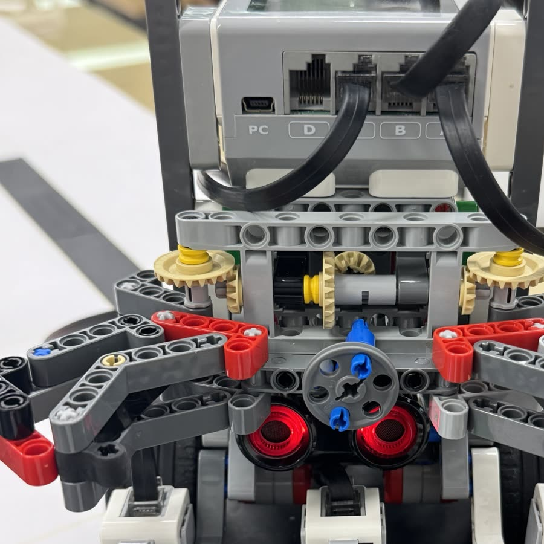
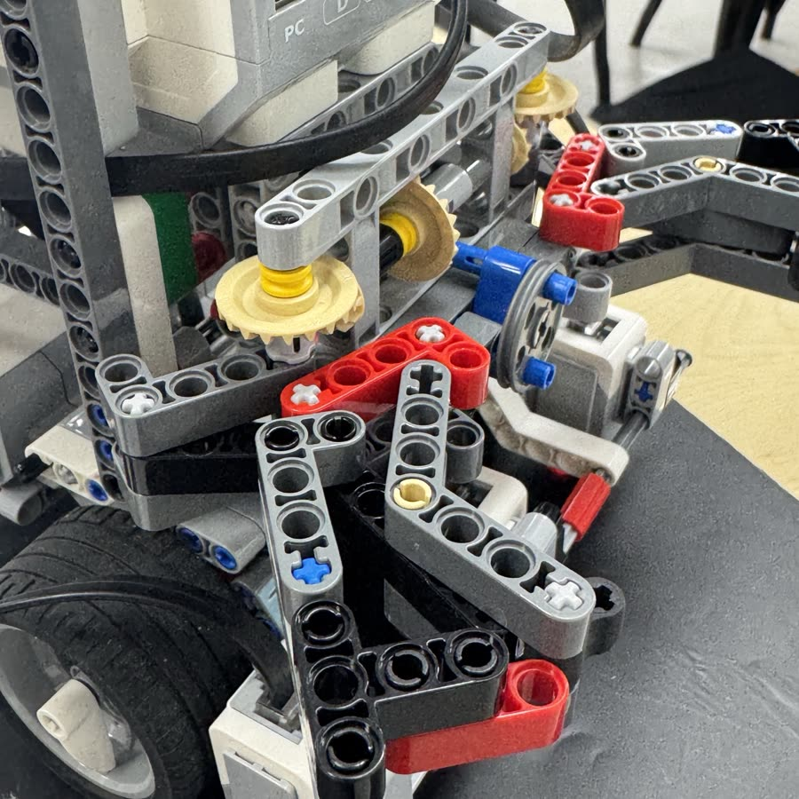
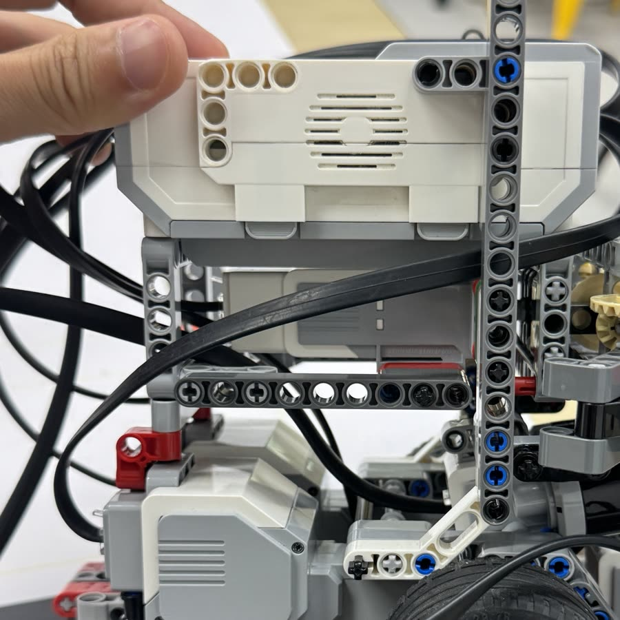

대표 프로젝트#PD 제어#병렬 처리#LEGO EV3
EV3 미로 탐색·객체 운반
전공 수업 · 팀 프로젝트
- 문제
- 라인 미로를 따라가며 물체를 집어 목표 지점까지 옮기는 과제였습니다. 센서 편향과 동작 사이 대기시간이 주행을 늦췄습니다.
- 접근
- PD 제어 이득을 튜닝하고, 센서가 오른쪽으로 치우친 만큼 좌우 회전을 다르게 설계했습니다. 순차로 돌던 동작은 병렬로 바꿨습니다.
- 결과
- 전체 주행시간을 38.5% 줄였습니다.



결과
개선 전 전체 주행시간을 100으로 놓은 상대값입니다.
개선한 것
- 01라인 추종이 흔들림PD 제어기의 Kp, Kd를 조정해 라인 추종을 안정시켰습니다.
- 02센서가 오른쪽으로 치우쳐 좌우 회전이 달라짐치우친 만큼을 반영해 좌우 회전을 비대칭으로 설계했습니다.
- 03동작이 순차로 실행되며 대기시간이 생김병렬 처리 구조로 바꿔 대기시간을 없앴습니다.
담당
- PD 제어기 튜닝
- 비대칭 회전 알고리즘
- 병렬 처리 구조